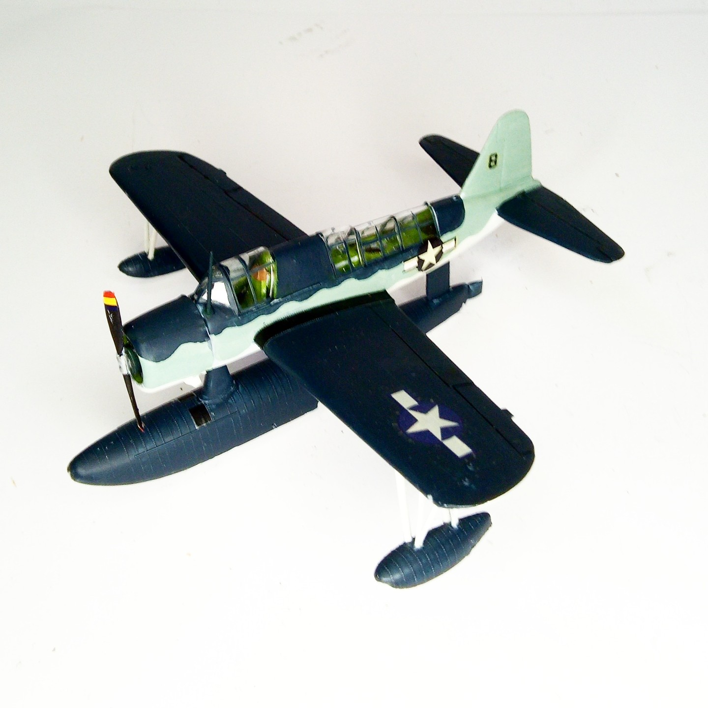

Aerei · scale model archive
Vought OS2U Kingfisher
Vought OS2U Kingfisher — Kit: AZ Models, Scale: 1/72. #1/72 #AZModels

Photo gallery
English description
#1/72 #AZModels
Aerei · scale model archive
Vought OS2U Kingfisher — Kit: AZ Models, Scale: 1/72. #1/72 #AZModels
